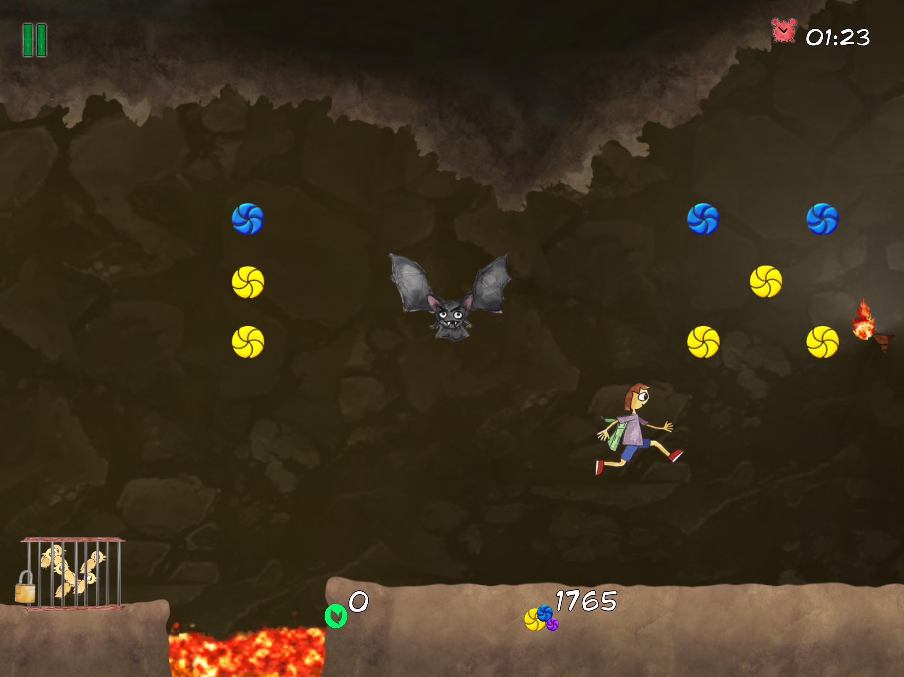
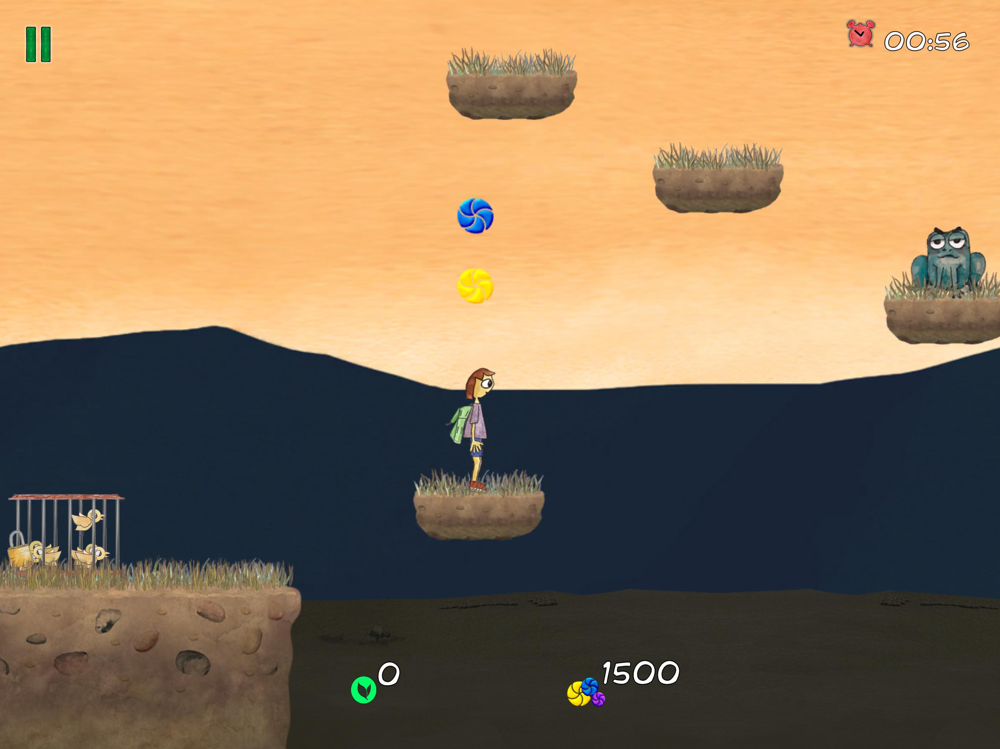
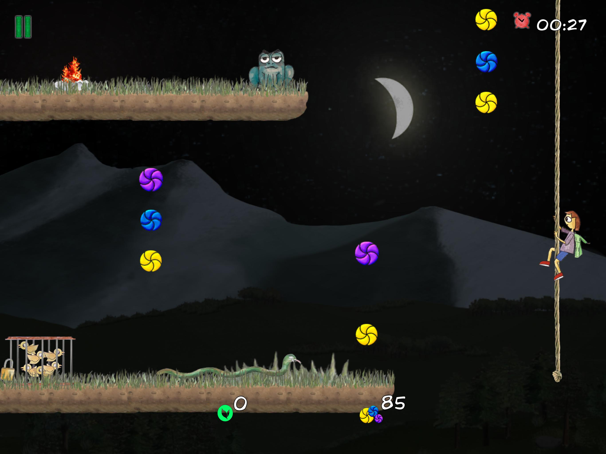
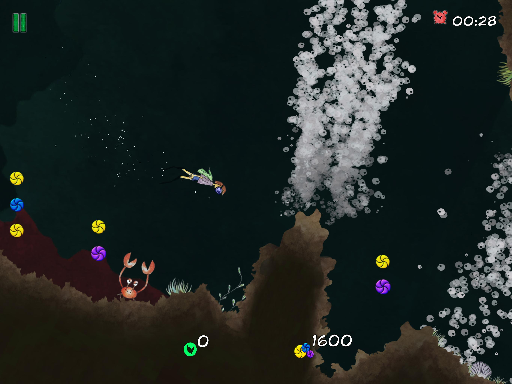

The game tells the story of Citto, who struggles to survive
in nature and slowly reconnects
with the environment by helping the very animals he once
felt
distant from.
It’s a journey of survival, reconciliation, and growth.
CiTTO
How it began
The game began when I came across a beautiful drawing made by a very talented child — a boy standing in the forest with a phone in his hand, surrounded by animals looking at him with anger. That image stayed with me, and I decided to bring it to life.
Development
From designing levels and balancing difficulty to implementing scoring systems, rewards, leaderboards, UI, audio, and character animations. I mostly created everything and integrated into Unity, also advertising and analytics solutions, and managed the publishing process for both the App Store and Google Play.

Core Gameplay
Here you can describe the primary game loop, mechanics, and what makes the gameplay fun and engaging. Talk about how the character interacts with the world.

Level Design & Progression
Explain how levels scale in difficulty, what new challenges players face as they progress, and how the environment evolves throughout the game.

Art & Atmosphere
Detail the artistic direction, inspiration behind the visuals, and how the art style supports the emotional narrative and tone of the experience.

Technical Highlights
- Game design & progression systems
- Level design & Difficulty balancing
- Scoring & reward systems
- Leaderboards integration
- UI & Audio implementation
- Character design & animation integration
- Asset pipeline (Photoshop → Unity)
- Ad & Analytics SDK integration
- Store deployment (App Store & Play Store)
- Full C# implementation